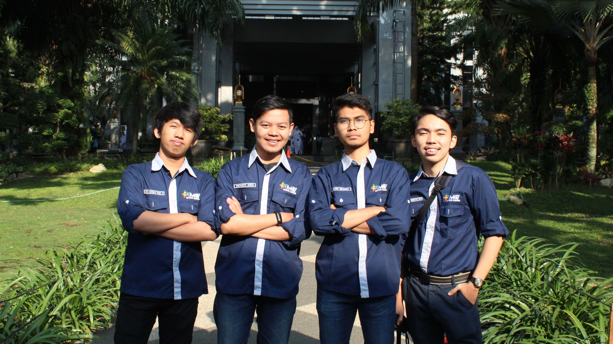

UKM Pertama Ku

Semenjak aku masuk kuliah, aku langsung mendaftar untuk ikut didalam
UKM
Mahasiswa
Wirausaha, dimana disana aku mendapat banyak sekali ilmu tentang kewirausahaan dan tidak
hanya itu, aku juga mendapatkan pengalaman tentang organisasi itu seperti apa. Tentu
tidak aku tidak bisa mengharapkan selalu untuk pendidikan kewirausahaan saja ketika
masuk di UKM tersebut, namun UKM tersebut juga harus memiliki organisasi yang bisa
membuat pelatihan kepada SDM didalam UKM tersebut.
1 tahun berlalu dengan segala kesibukan di UKM Mahasiswa Wirausaha dan
pembagian waktu dengan kuliah juga membuat hari-hari ku dipenuhi dengan kegiatan yang
produktif, tidak hanya sebatas bermain menghamburkan uang orang tua. Terima Kasih atas
pengalaman yang mengesankan udh bisa menjadi anggota UKM semoga ini merupakan batu
loncatan ku untuk ke jenjang karir selanjutnya.